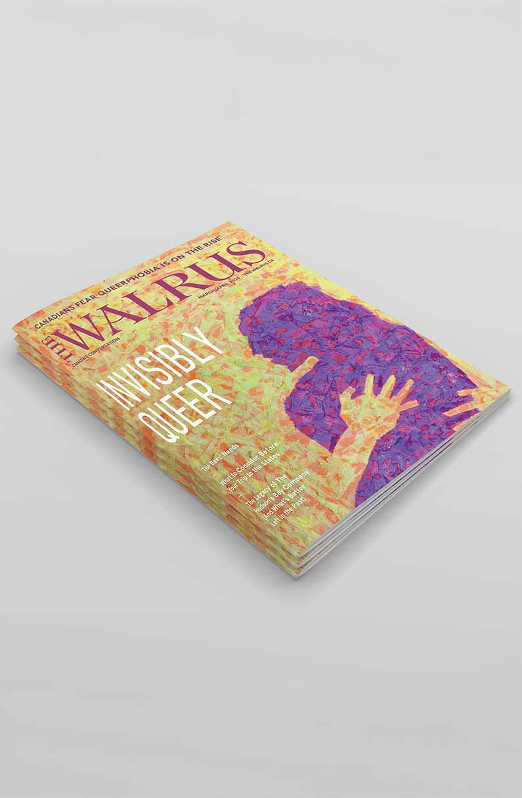
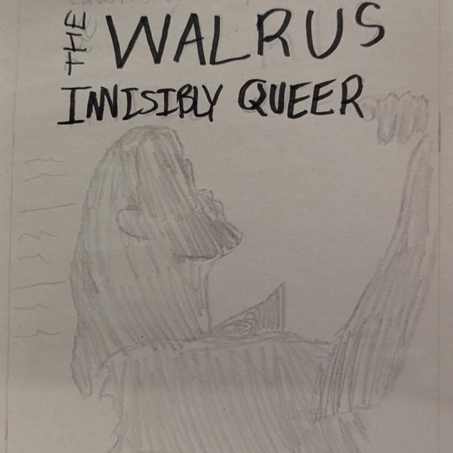
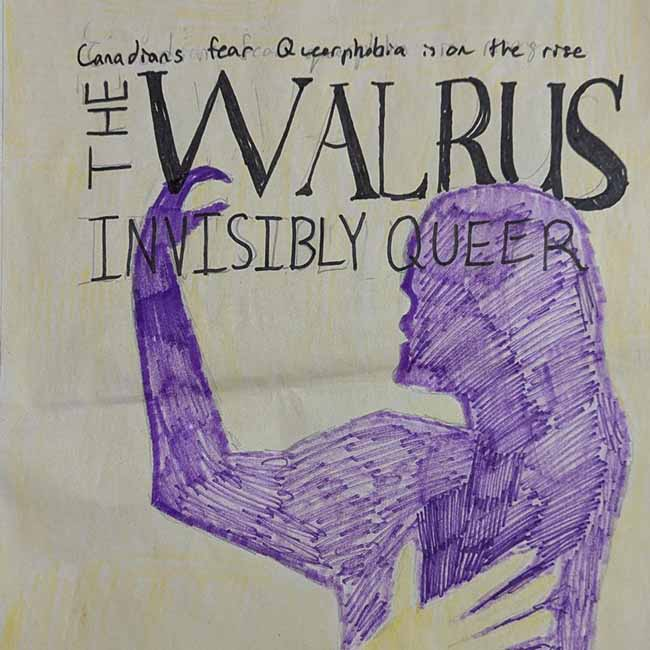
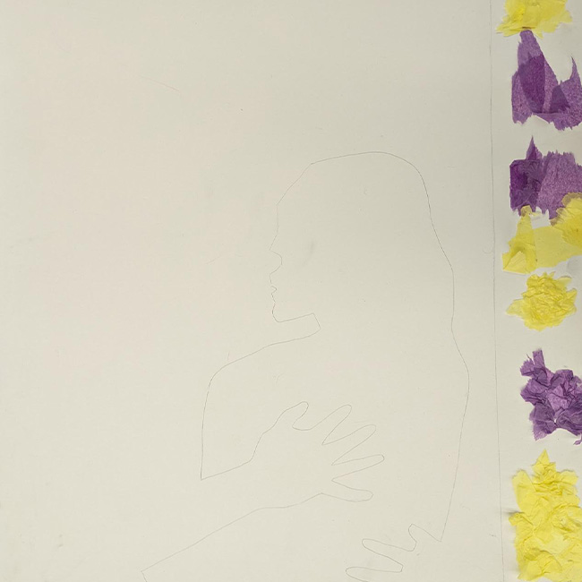
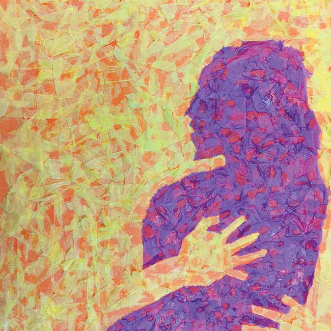
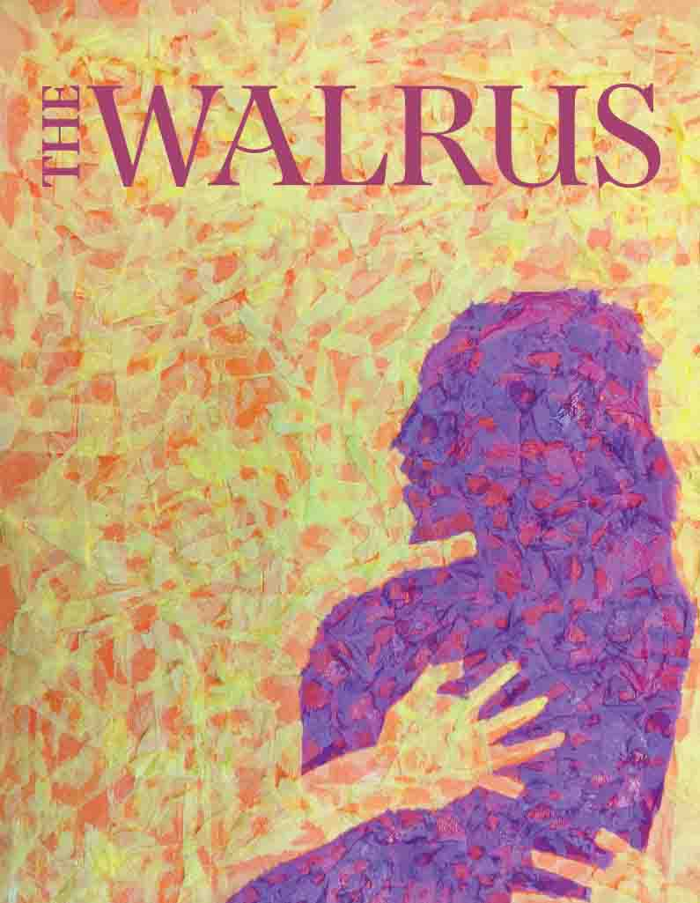
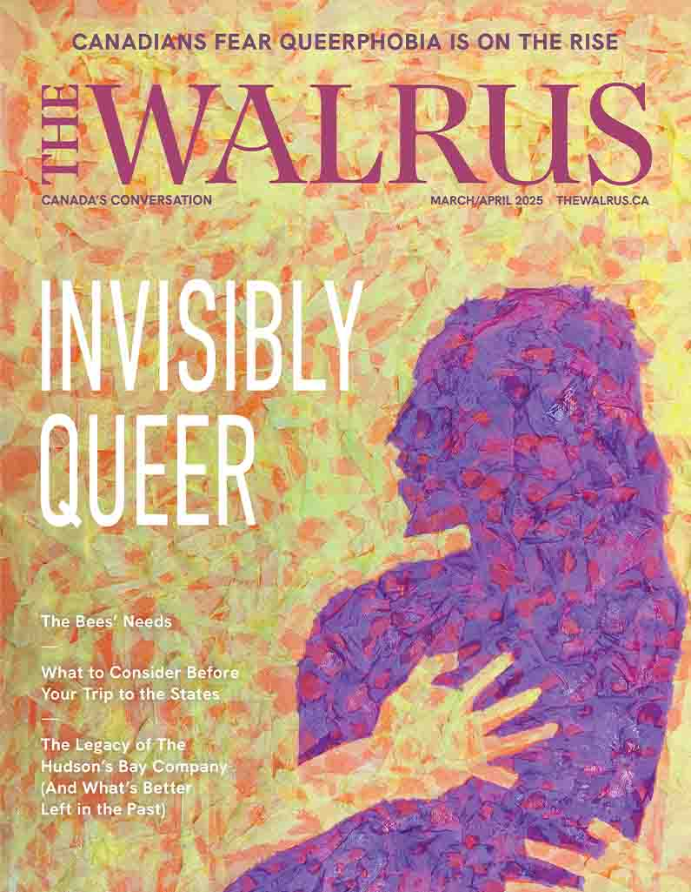

Design a cover for The Walrus based off of a Canadian news story.
The imagery is made of tissue paper, an unconventional medium, but it has a purpose. On the outside, it may seem different from what❜s expected, but does that make it any less of an art form? The medium represents how people tend to view LGBTQ+ individuals, where they may seem different, but they❜re people too. That❜s why the yellow and purple both share an underlying orange, because no matter who we are, we all crave and deserve love.






